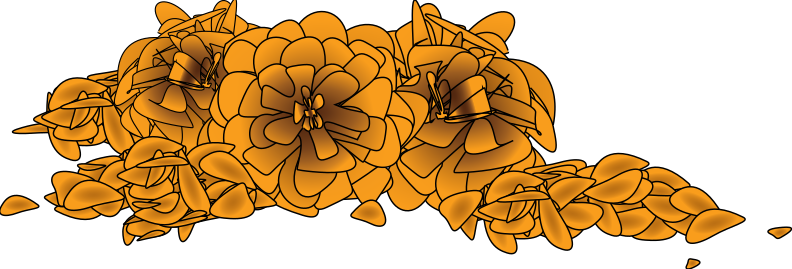
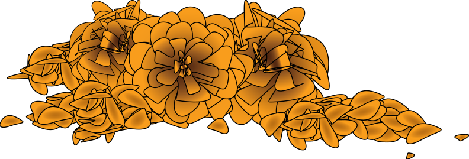

Picados
Seen mostly during the holiday, papel picado(pierced papers) are colored papers hung on altars and on the streets said to represent the wind and fragility of life.
Dio De Los Muertos (Day of the Dead)
This holiday takes place on both February 1 and 2.
It focuses on remembering and praying for the deceased with one’s family and friends.
La Calavera Catrina
La Calavera Catrina is the most iconic skeleton that is seen all throughout the makeup, candies, and art.
Ofrendas / Alters
People go to the cemetery to build private altars(ofrendas) filled with the favourite foods and photos of the departed.
According to tradition, if you do not successfully build a suitable ofrenda for the dead, they may get revenge.
Cempasúchitl (Marigolds)
The traditional flower used to honour the dead is Mexican cempasúchitl(marigold), also known as the flower of the dead. It is also said to help guide the spirits back home.
Face Paint
People paint their faces to represent skulls and wear fancy suits and dresses for the fun.
Calaveras de Alfeñique
Calaveras de Alfeñique(candy skulls) are traditional and used as an offering on the ofrenda.
Calaveras
Calaveras are also known to be short, humorous poems that makes jokes about the living. These are now a popular part of the celebration.